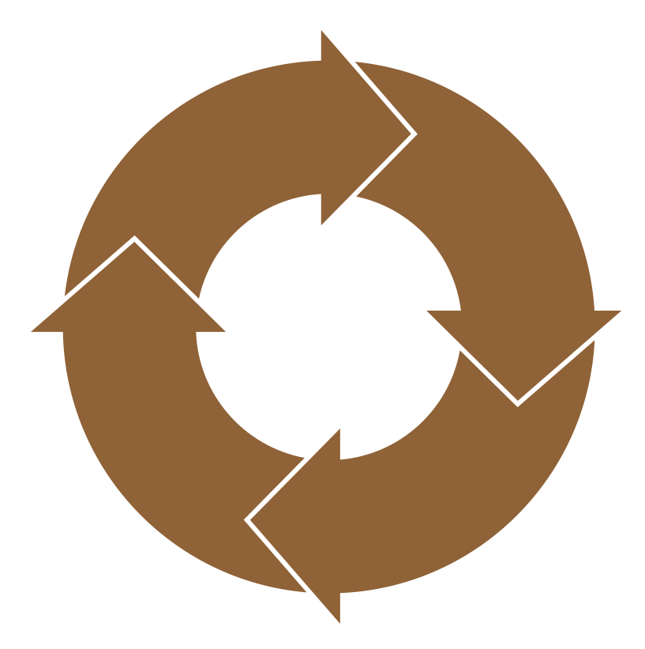

Created by marmots
Why don't start with much more than this ???
to...
Building, testing, documenting, reports, coverage, deployment...
Environment profiles, datasource configuration, basic authentication (by default), profile authorization, method security, CSRF, XSS, transactional...
Value Objects to communicate between layers, Factories for dummy data, JUnit tests for all...
Spring JDBC, fast plain SQL, easily maintainable; CRUD, pagged, sorted, filtered, JUnit tests...
Delegating Business Components (or you thought you wouldn't have to do anything?), JUnit tests...
Spring MVC/REST, Business Objects published via HTTP, mockmvc based JUnit tests...
Angular 1.7.2 (working on 6 :-), services, component based: card, detail, list, grid, form (embeddable and context-aware), authentication, authorization, localization...
Subversion (in love with ASF ;-), Jenkins, Nexus, Sonarqube and Mantis is the one I use.
Generated code is not a blackbox, hard to understand or with potential performance bottlenecks...
Is the same code you would write; but in seconds and errorless, reliable, and accurate.
What you prefer in another way; we can change it, adjust and adapt to fit your needs.
...you just need to say it!
Everything developed with great love, passion, tons of dedication and having fun :-)
5 minute video fast-forward with annotations
20 minutes video with no comments in real time (play your favorite music)
28 minute video with explanations (you can laugh at my english)
Generated application (as-is)
(admin-admin / user-user)
Generated application (with development - 3 days old)
(you can register)
Generator in-action playlist
I will publish how-to's about developing a generated application
If you want to know more, contact me